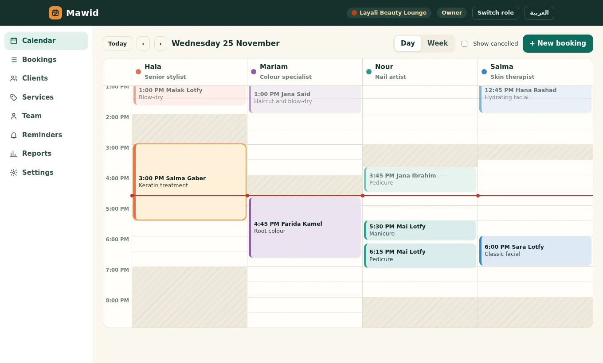
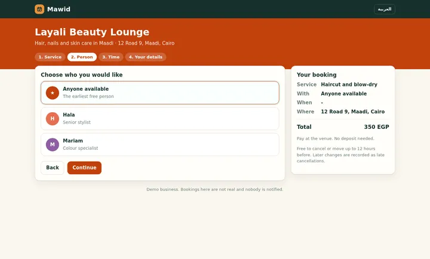
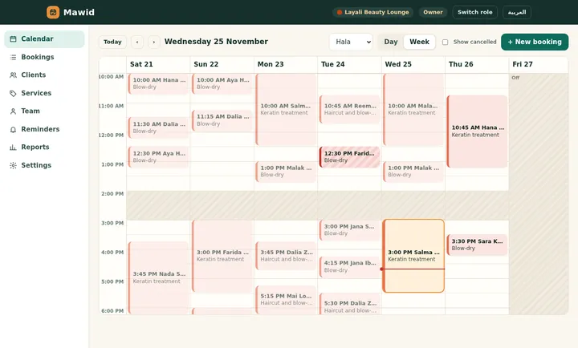
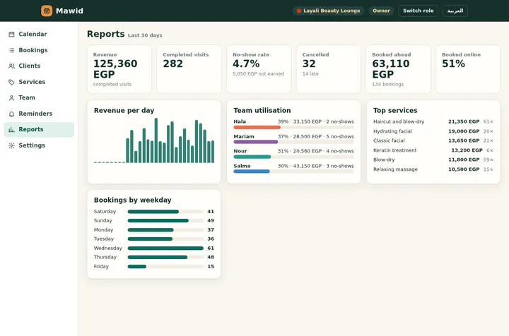
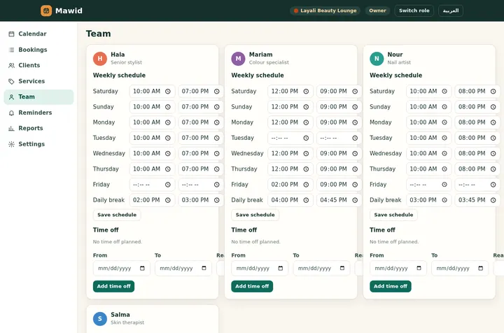
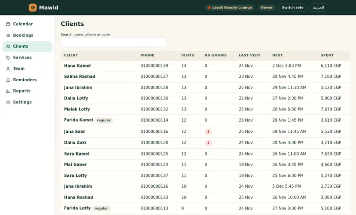
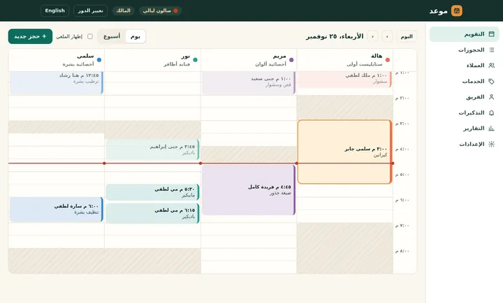
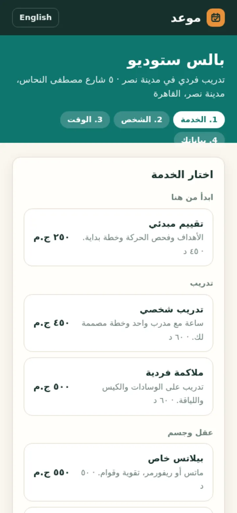

PORTFOLIO DEMO / BUILT / LIVE DEMO
Mawid
Every appointment, without the double booking.

ACTUAL BUILDMawid · Day calendar. Fictional demo data.
The problem
Small salons, gyms and clinics take bookings through WhatsApp, calls and a paper diary. Two people end up in the same chair at the same time, a day off is forgotten, nobody remembers who keeps not showing up, and the owner spends the evening confirming tomorrow's list by hand.
What was built
An appointment system with two faces. Customers open a booking page for the business, choose a service, choose a person or "anyone available", see only slots that are really free and get a confirmation code, with no deposit. With the code and their phone number they can reschedule or cancel from a manage page. The business team gets a dashboard: a day and week calendar with a column per staff member, a bookings list, clients with visit history and a no-show count, services and prices, weekly schedules with breaks and time off, a reminders queue, reports and settings.
Slots follow the rules the owner sets: service length, a step between starts, buffer time, daily breaks, opening days and time off. "Anyone available" picks the least busy free person. Cancelling inside the notice window is recorded as a late cancel, a no-show can only be marked after a grace period, and a client with repeated no-shows can be required to call first. Roles split owner, manager, reception and team member: a team member sees only their own day, and reports and settings stay with the owner and manager. The interface is fully Arabic right-to-left or English, and the Cairo time zone is handled with the browser's own time zone data so the summer time change does not shift bookings.
The approach
No framework: plain JavaScript pages and one serverless API function. The scheduling rules live in a pure logic module: slot generation, conflict checks, status flow, derived reminders, reports and permissions. Every write is checked again on the server against the latest state, so two people choosing the same slot cannot both win, and a team member cannot cancel a booking whatever the screen shows. State is stored in Vercel Blob as one immutable blob per version, and a writer that loses a race retries on top of the winner. Dashboard actions carry unique ids so a retry never applies twice, and check-in, complete and note actions made without a connection are queued on the device and sent when it returns. Thirty-eight unit and API tests pass, and the scripted browser test against the live site books through the real page, tries to take the same slot twice, fires eight bookings for one slot in parallel (exactly one is accepted), checks the dashboard, role limits, time off, customer cancel, Arabic layout and offline opening, with no console errors.
The result
A live demo anyone can open. Pick a role on the dashboard, or book as a customer on the public page for a salon or a gym. The sample data holds about a thousand bookings across a month, including no-shows and late cancels, so every chart and list has something to show.
Evidence & production limits
One shared demo workspace that resets every six hours: everyone sees and changes the same bookings. Sign-in is a role picker with no passwords, so it must not hold real customer data. Businesses, people, phone numbers and prices are fictional. No SMS, WhatsApp or email is sent: the reminders queue shows what would be sent.
Known gaps: one service per booking; no group classes, packages or recurring bookings; offline support covers the app shell, the last loaded views and queued check-in, complete and note actions, not a first load or new bookings without a connection; under heavy load a write can answer "busy" and needs a retry. Direction, scope and delivery: Nada Gamal.
Next chapter
Real sign-in, a proper database, SMS or WhatsApp reminders, group classes with capacity, recurring bookings and online deposits would be the next implementation steps.
Inside the build
Open any preview to see the full capture. Captures show demonstration content, not evidence of client use.






